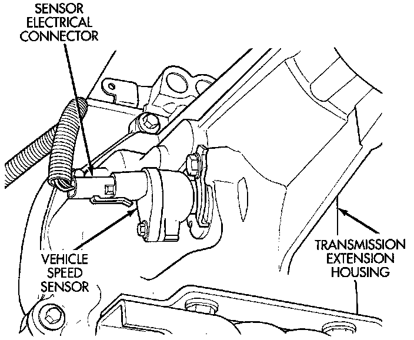
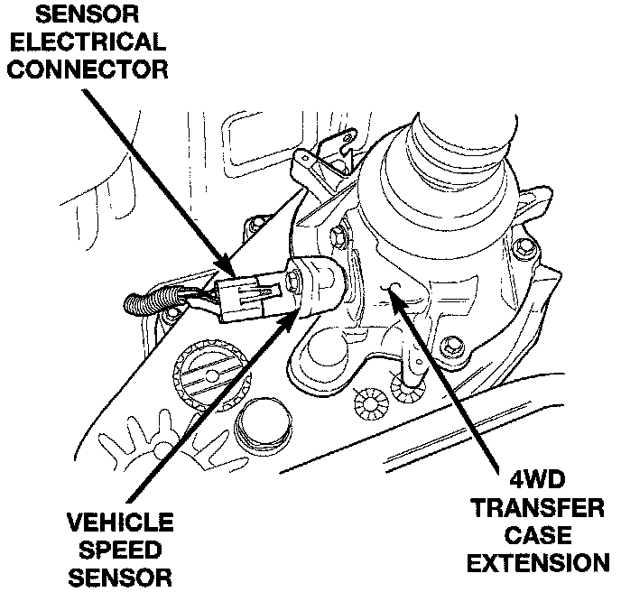

Vehicle Speed Sensor Operation
VEHICLE SPEED AND DISTANCE SENSOR-PCM INPUTFig. 11 VSS Location - 2WD:

Fig. 12 VSS Location - 4WD:

The vehicle speed sensor is located on the speedometer pinion gear adapter (Fig. 11) or (Fig. 12). The pinion gear adapter is located on the extension housing of the transmission (drivers side-2WD), or on the transfer case (4WD). The sensor input is used by the powertrain control module (PCM) to determine vehicle speed and distance traveled.
SYSTEM OPERATION
The Vehicle Speed Sensor (VSS) is a pulse generator mounted to an adapter near the transmission output shaft. The sensor is driven through the adapter by a speedometer pinion gear. The VSS pulse signal is monitored by the PCM speed control circuitry to determine vehicle speed and to maintain speed control set speed. Refer to the appropriate Powertrain Management/Computers and Control Systems/Testing and Inspection/Diagnostic Charts Procedures for diagnosis and testing of this component.
The speed sensor generates 8 pulses per sensor revolution. These signals, in conjunction with a closed throttle signal from the throttle position sensor, indicate a closed throttle deceleration to the PCM. When the vehicle is stopped at idle, a closed throttle signal is received by the PCM (but a speed sensor signal is not received).
Under deceleration conditions, the PCM adjusts the Idle Air Control (IAC) motor to maintain a desired MAP value. Under idle conditions, the PCM adjusts the IAC motor to maintain a desired engine speed.